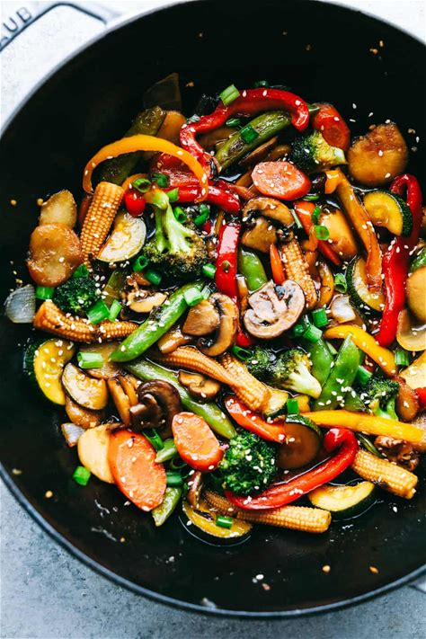

Colorful veggies tossed in a savory sauce, served over steamed rice

Prep Time
15 minutes
Cook Time
10 minutes
Servings
4 people
Difficulty
Easy
Ingredients
2 cups broccoli florets
1 red bell pepper, sliced
1 yellow bell pepper, sliced
1 cup snap peas
1 carrot, julienned
1 cup mushrooms, sliced
3 cloves garlic, minced
1 tablespoon ginger, minced
2 tablespoons vegetable oil
2 cups cooked rice (for serving)
For the Sauce:
3 tablespoons soy sauce
2 tablespoons oyster sauce
1 tablespoon rice vinegar
1 tablespoon honey or brown sugar
1 teaspoon sesame oil
1/4 cup vegetable broth
1 tablespoon cornstarch (for thickening)
Instructions
Prepare the sauce: In a small bowl, whisk together soy sauce, oyster sauce, rice vinegar, honey, sesame oil, vegetable broth, and cornstarch. Set aside.
Prep vegetables: Wash and cut all vegetables into uniform sizes. Mince garlic and ginger.
Heat the wok: Heat a wok or large skillet over high heat until very hot. Add 1 tablespoon of oil.
Stir fry aromatics: Add garlic and ginger to the hot oil and stir fry for 30 seconds until fragrant.
Cook hard vegetables: Add broccoli, carrots, and bell peppers. Stir fry for 2-3 minutes until slightly softened.
Add remaining vegetables: Add snap peas and mushrooms. Continue stir frying for 2-3 more minutes.
Add sauce: Pour the prepared sauce over the vegetables and stir well to coat everything evenly.
Finish cooking: Cook for 1-2 minutes until the sauce thickens and vegetables are crisp-tender.
Serve: Serve hot over steamed rice with extra soy sauce on the side.
Tips & Variations
Cut all vegetables to similar sizes for even cooking.
Don't overcrowd the pan - cook in batches if needed for better results.
Add protein like tofu, chicken, or shrimp for a complete meal.
Use different vegetables based on what's in season or available.
For extra heat, add red pepper flakes or fresh chili peppers.
Garnish with sesame seeds, green onions, or fresh cilantro.